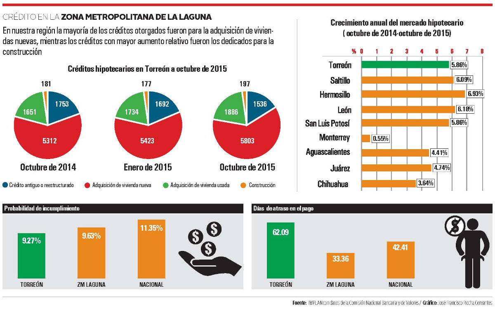

Durante el último año, de octubre de 2014 a octubre de 2015, el crecimiento anual del mercado hipotecario (que se refiere al número de créditos otorgados) en el municipio de Torreón fue de 5.86%, mientras que en la Zona Metropolitana de La Laguna creció en promedio 6.10%.
El crecimiento en ambos casos es superior al registrado a nivel nacional que fue de 3.01%.
En los primeros diez meses de 2015 los créditos hipotecarios en Torreón aumentaron 4.39%.
La mayoría de los créditos otorgados fueron para la adquisición de viviendas nuevas –buena noticia para el mercado inmobiliario-, mientras los créditos con mayor aumento relativo fueron los dedicados para la construcción, con un incremento de 11.30%.
En otras ciudades de la República Mexicana el mercado hipotecario tuvo un crecimiento similar, a excepción de Monterrey, donde el portafolio total de créditos hipotecarios aumentó apenas 0.55%. Otros municipios como Chihuahua aumentaron su mercado aunque en menor medida.
Importancia del mercado inmobiliario
El buen funcionamiento del mercado inmobiliario es clave para la salud de la economía.
La vivienda no es sólo una necesidad básica, sino una parte importante de la inversión y en muchos casos el mayor componente de la riqueza: los hogares concentran la mayoría de su capital en sus bienes inmuebles.
Además, los mercados hipotecarios participan en la transmisión de la política monetaria y ayudan a las economías a adaptarse a los shocks.
Vigilar el crecimiento del crédito es de suma importancia para organismos internacionales como el Fondo Monetario Internacional (FMI), pues es clave en la identificación de ciclos de auge y caída del mercado hipotecario, fenómeno que ligado al apalancamiento y a la exposición de hogares provoca crisis en la economía real.
El hecho de que en nuestra región el crédito crezca a una tasa superior a la nacional es una señal de desarrollo económico, pues los mercados inmobiliarios crecen a medida que las economías se desarrollan.
Sin embargo, debemos analizar también indicadores como los días de atraso y las probabilidades de impago para darnos una idea más clara de la situación.
En estos indicadores, La Laguna se encuentra en mejor posición al promedio nacional, ya que mientras la probabilidad de incumplimiento en nuestra zona metropolitana es de 9.63%, el promedio nacional es de 11.35%.
Además, los laguneros se atrasan 9 días menos en los pagos de sus hipotecas en comparación con el promedio del resto de los mexicanos. Torreón, en lo particular, tiene un promedio de días de atraso mayor al nacional.
Los resultados negativos en la probabilidad de incumplimiento y el atraso en los pagos puede ser causa de la disminución de poder adquisitivo provocado por un mínimo crecimiento en los salarios sumado a una tasa de desempleo que en el municipio de Torreón se ha mantenido constante en 6.2% durante los primeros tres semestres del año, sin mencionar la falta de planeación financiera.
No obstante, el aumento en los créditos hipotecarios en el municipio de Torreón empata con el aumento en el registro de nuevos negocios, los cuales hasta el mes de octubre suman 2,055 nuevos establecimientos, indicador de dinamismo en la economía.
Bibliografía
Zhu, M. (2014). [Los mercados inmobiliarios, la estabilidad financiera y la economía](http://www.imf. org/external/spanish/np/speeches/2014/060514s.htm). En Fondo Monetario Internacional. Obtenido el 21 de junio de 2014.
Infografía
